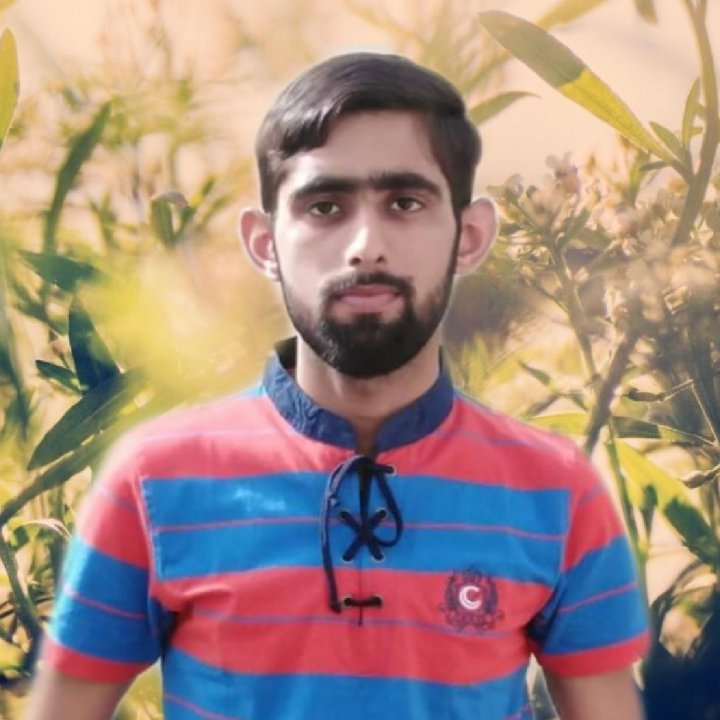

Abdul Basit

Summary
As a dedicated and enthusiastic web developer, my objective is to leverage
my skills in front-end and back-end development to contribute to
innovative and user-friendly web solutions.
Education
Bachelor of Science in Computer Science
Virtual University Of Pakistan
Graduated: October 2023
Relevant Coursework:
- Web development Fundamentals
- Database Design and Implementation
- Algorithms and Data Structures
- Software Engineering
- Networking
Work experience
- University Project
Completed my Univerity Project School Finding Application
- Freelance Web Developer
- Worked with a diverse set of clients to deliver custom web solutions tailored to their specific needs.
- Collaborated closely with clients to understand their requirements and provide ongoing technical support.
Key Skills:
- Proficient in HTML
- Experience with version control systems such as Git.
Certification
- Certificate of Web Development course PNY training institute, Lahore
Other